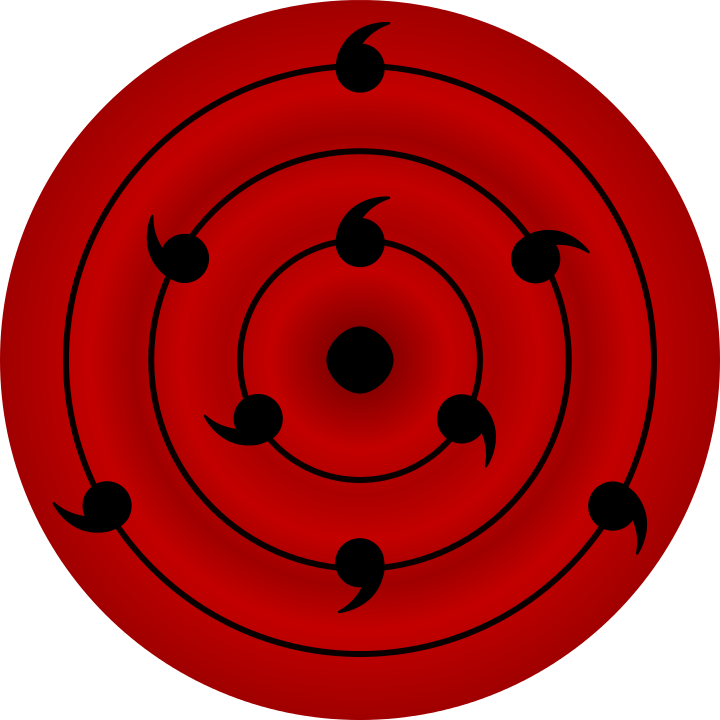

Visi dan Misi
Visi
Mewujudkan masyarakat yang harmonis dan berkelanjutan di bawah
naungan perdamaian abadi (Mugen Tsukuyomi), di mana
setiap individu dapat hidup tanpa konflik dan ketidakadilan, serta
berkontribusi untuk kesejahteraan bersama.
Misi
-
Perdamaian Universal: Mengimplementasikan
kebijakan yang mendukung perdamaian abadi dengan menciptakan
lingkungan yang bebas dari peperangan dan konflik antar klan.
-
Kesetaraan dan Keadilan: Memastikan hak dan
kewajiban setiap individu dihormati, tanpa memandang latar
belakang, kekuatan, atau kemampuan.
-
Inovasi dan Teknologi: Mendorong pengembangan
teknologi dan inovasi untuk meningkatkan kualitas hidup
masyarakat, termasuk dalam bidang pendidikan, kesehatan, dan
ekonomi.
-
Kesejahteraan Bersama: Mengedepankan
program-program yang menjamin kesejahteraan sosial dan ekonomi
bagi semua lapisan masyarakat, dengan fokus pada pengurangan
kemiskinan dan peningkatan akses layanan dasar.
-
Pendidikan dan Kesadaran: Mengedukasi masyarakat
tentang pentingnya kerjasama, empati, dan visi bersama demi
mencapai tujuan kolektif.
-
Keberlanjutan Lingkungan: Mengimplementasikan
kebijakan yang menjaga dan melestarikan lingkungan hidup, guna
menciptakan ekosistem yang seimbang dan berkelanjutan untuk
generasi mendatang.

Sejarah
Latar Belakang
Sejak zaman kuno, dunia shinobi telah dilanda konflik dan
peperangan, mengakibatkan banyak penderitaan. Kaguya Otsutsuki, yang
dikenal sebagai makhluk pertama yang memanfaatkan chakra,
menyaksikan kehampaan yang ditimbulkan oleh konflik ini. Dengan visi
untuk menciptakan dunia yang damai dan harmonis, Kaguya bertekad
untuk menyatukan umat manusia di bawah satu payung, bebas dari
ketegangan dan perpecahan.
Awal Mula: Akatsuki
Organisasi Akatsuki, yang didirikan oleh Yahiko, Nagato, dan Konan,
awalnya bertujuan untuk membawa perdamaian dunia shinobi melalui
kekuatan. Namun, seiring berjalannya waktu, visi mereka mulai
terdistorsi, terutama setelah Nagato mengambil alih kepemimpinan.
Pendekatan yang lebih agresif dan penggunaan kekuatan besar,
termasuk jutsu terlarang, menyebabkan ketegangan dengan banyak klan
dan negara.
Perubahan Visi
Setelah pertempuran besar melawan para ninja, termasuk konfrontasi
dengan Naruto dan kawan-kawan, Nagato mulai meragukan metode yang
digunakannya. Dia menyadari bahwa kekerasan hanya akan melahirkan
lebih banyak kebencian dan penderitaan. Pada saat yang sama, Kaguya
Otsutsuki muncul dengan visinya tentang perdamaian abadi, menarik
perhatian para mantan anggota Akatsuki.
Pembentukan Partai Mugen Tsukuyomi
Melihat potensi perubahan, Kaguya mengusulkan untuk mendirikan
Partai Mugen Tsukuyomi, yang akan menjadi wadah untuk merealisasikan
visi perdamaian tanpa kekerasan. Dengan dukungan Nagato, Konan, dan
beberapa mantan anggota Akatsuki lainnya, partai ini dibentuk
sebagai upaya untuk mengalihkan fokus dari kekuatan destruktif ke
pembangunan masyarakat yang harmonis.
Arah Baru
Partai Mugen Tsukuyomi menetapkan tujuan untuk menyatukan dunia
shinobi melalui dialog, kolaborasi, dan pemahaman. Dengan pendekatan
ini, mereka melibatkan berbagai klan dan suku, menjadikan partai
sebagai simbol harapan baru.
Dari akar konflik yang ditanam oleh Akatsuki, Partai Mugen Tsukuyomi
lahir sebagai jawaban atas kebutuhan akan perdamaian. Dengan visi
Kaguya dan pengalaman mantan anggota Akatsuki, partai ini
berkomitmen untuk menciptakan dunia yang lebih baik, mengakhiri
siklus kekerasan, dan membangun masa depan yang harmonis untuk
semua.
Pencapaian
Sejak didirikan, Partai Mugen Tsukuyomi telah membantu
shinobi-shinobi di dunia menyelesaikan berbagai masalah seperti
konflik, perang, dan lain-lainnya.
Perdamaian Antara Klan Uchiha dan Senju
Dalam perjalanan panjang sejarah shinobi, konflik antara Klan
Uchiha dan Klan Senju merupakan salah satu yang paling terkenal.
Namun, di bawah kepemimpinan
Madara Uchiha sebagai
Wakil Ketua Partai Mugen Tsukuyomi, sebuah era
perdamaian telah berhasil diraih.
Latar Belakang Konflik
Klan Uchiha dan Klan Senju telah berjuang selama berabad-abad,
terjebak dalam siklus dendam dan peperangan. Masing-masing
memiliki kekuatan dan keunikan, namun perbedaan filosofi dan
tujuan seringkali memicu pertikaian.
Peran Madara Uchiha
Sebagai salah satu pemimpin terkuat dan paling berpengaruh, Madara
mengambil langkah berani untuk merangkul rekonsiliasi. Dia
memahami bahwa perdamaian sejati hanya dapat dicapai dengan
mengatasi akar masalah yang mendasari konflik.
-
Dialog Terbuka: Madara menginisiasi serangkaian
pertemuan antara pemimpin kedua klan. Dalam pertemuan ini, dia
mendorong dialog terbuka untuk saling memahami pandangan dan
aspirasi masing-masing.
-
Kompromi yang Konstruktif: Dengan kepemimpinan
visionernya, Madara memperkenalkan ide-ide kompromi yang
memungkinkan kedua klan untuk berkolaborasi demi kepentingan
bersama. Dia menunjukkan bahwa kekuatan seharusnya digunakan
untuk melindungi, bukan menghancurkan.
-
Membangun Kepercayaan: Melalui program
pertukaran dan kerja sama, Madara membantu membangun kepercayaan
antara anggota kedua klan. Dia percaya bahwa kolaborasi dalam
berbagai proyek sosial dan ekonomi akan memperkuat hubungan
mereka.
Hasil yang Dicapai
Setelah beberapa tahun upaya dan negosiasi yang penuh tantangan,
perdamaian yang telah lama dinanti akhirnya tercapai. Pencapaian
ini tidak hanya mengakhiri konflik, tetapi juga membuka jalan bagi
kolaborasi yang lebih besar.
-
Proyek Bersama: Klan Uchiha dan Senju kini
bekerja sama dalam berbagai proyek pembangunan, termasuk
infrastruktur dan pendidikan, yang menguntungkan kedua belah
pihak.
-
Pertukaran Budaya: Acara budaya dan festival
bersama diadakan untuk merayakan keberagaman dan sejarah
masing-masing klan, menciptakan ikatan yang lebih kuat di antara
mereka.
Pelestarian pohon Shinju yang hampir punah
Pohon Shinju, simbol kehidupan dan chakra di
dunia shinobi, pernah hampir punah. Namun, berkat upaya
terorganisir dari Partai Mugen Tsukuyomi dan berbagai klan,
pelestarian pohon ini berhasil dilakukan. Program rehabilitasi
habitat telah ditetapkan, dengan penanaman ribuan bibit di lokasi
asalnya dan perlindungan lingkungan sekitar.
Masyarakat dilibatkan melalui kampanye edukasi dan festival
tahunan yang meningkatkan kesadaran akan pentingnya pohon Shinju.
Kolaborasi dengan ahli botani memungkinkan penelitian genetik dan
teknik pembiakan yang lebih efektif.
Kebijakan pelestarian pun diperkuat dengan larangan penebangan dan
penetapan zona perlindungan. Dengan sistem monitoring yang ketat,
kondisi pohon Shinju terus dievaluasi. Hasilnya, ekosistem sekitar
juga pulih, meningkatkan keanekaragaman hayati dan mencegah erosi
tanah. Upaya ini menunjukkan bahwa kerja sama dapat membawa dampak
positif bagi alam dan masyarakat.